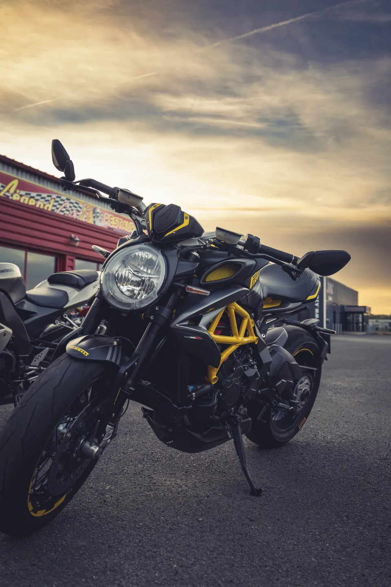

L’instant lisible
Je cherche le moment où le sujet devient évident : une vitesse, un regard, une lumière, une tension, une présence.
Cholet · Clisson · Nantes · Pays de la Loire
Instant.GH rassemble des séries photo de terrain : moto, automobiles, sport, aviation, animalier, paysages, concerts, portraits et événements locaux. L’envie est simple : immortaliser un moment, saisir une émotion, figer le temps avant qu’il ne disparaisse.

Démarche
Je cherche le moment où le sujet devient évident : une vitesse, un regard, une lumière, une tension, une présence.
Une photo peut immobiliser une fraction de seconde, conserver une intensité et rendre visible ce qui disparaît presque aussitôt.
Basé entre Clisson et Cholet. Déplacements possibles en Vendée, Nantes, Pays de la Loire et Bretagne selon le projet.
À propos
Je m’appelle Gallien, je suis basé entre Clisson et Cholet. La photographie est devenue pour moi une manière de garder les moments qui passent trop vite : un regard, une vitesse, une lumière, une émotion.
Avec Instant.GH, je construis des séries autour de sujets vivants et puissants : moto, sport, aviation, animalier, concerts et événements de terrain.
Mon approche reste simple : observer, cadrer, déclencher au moment où l’image devient évidente.
Chaque série est pensée pour raconter un sujet avec cohérence : une accroche forte, des détails, de l’action, une ambiance et une image finale mémorable.
Séries
Portfolio complet
Ce site présente l’identité Instant.GH et les séries principales. Le portfolio Adobe rassemble davantage d’images, de projets et d’ambiances pour découvrir plus largement mon travail photographique.
Soutenir
Soutien volontaire
Une partie de mes images est réalisée bénévolement pour des groupes, associations, clubs et événements locaux. Si vous appréciez le travail ou souhaitez aider à couvrir les frais de déplacement, de matériel et de temps passé en tri/retouche, vous pouvez laisser un soutien libre.
Chaque contribution aide à poursuivre les séries photo Instant.GH, sans transformer la démarche en vente forcée.
Soutenir via PayPalProjets
Série événementielle
Une sélection courte et cohérente : photo d’accroche, détails, action, ambiance, image finale.
Image de club
Produire des images qui montrent l’intensité, la précision du geste et l’identité du groupe.
Présence numérique
Séries prêtes pour Instagram, TikTok, affiches, site ou supports de communication.
Formats possibles
Documenter un événement, une journée associative, un rassemblement ou une scène de terrain.
Créer une sélection cohérente pour réseaux sociaux, communication locale ou souvenir d’un moment fort.
Photographier une personne dans son univers : motard, sportif, musicien, artisan ou passionné.
Échanger autour d’un projet photo local, d’une série à construire ou d’une idée à documenter.
Contact
Décrivez simplement le sujet, le lieu, la période et l’usage souhaité des images. Je vous répondrai pour voir ce qu’il est possible de construire.